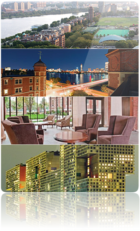

Residential Life
The Institute's undergraduate dorms are awesome. We love living in them. So why move out? Alpha Sig combines the cherished social experience and networking opportunities of fraternity life with the comfort and convenience of living in co-ed residences with dining halls, fitness centers, study spaces, and much more. Plus, this means exactly none of your time will be spent on house cleaning.

Strengths, Not Stereotypes
Fraternities have, for the most part, earned their abhorrent reputation. Alpha Sig was founded to be different; to value chivalry and scholarship, and to prove that the social experience of college is about more than an obsessive focus on drinking and getting laid. We're taking a stand, and we're serious about it. It's time to live the strengths, not the stereotypes, of fraternity life.
Make No Little Plans
Alpha Sig is the fastest expanding social fraternity in the United States, and is rapidly developing its reputation as the premier organization for bright, enterprising young men of character. Our colony is just barely getting off the ground, so don't miss this opportunity to take the lead, make an impact, and shape our organization by being a member during its most formative years.
No Bullshit
You'll notice we haven't mentioned the fraternity's motto or founding date yet. For that matter, we haven't really pushed any extraneous information to you. And apart from what national headquarters imposes, we never will, just as we'll never make you memorize an antiquated list of values or carry out an unwise stunt in the name of ritual. That's because while we value the tradition inherent to a fraternity, we realize that it's not what matters most. First and foremost, people join people.
Charitable Service
We aren't claiming that we enjoy service hours any more than the next guy, but we do embrace that an organization like ours provides the ideal framework within which to coordinate and carry out immensely satisfying community service and philanthropy projects that restore the public image of fraternities, especially in the context of our national partnership with the LiveSTRONG campaign.